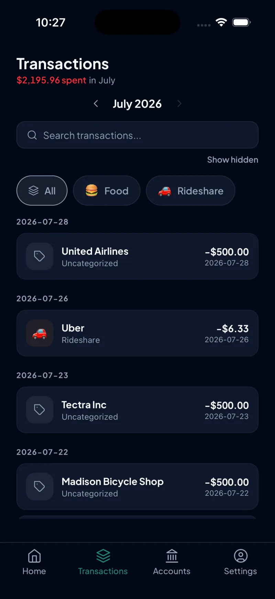
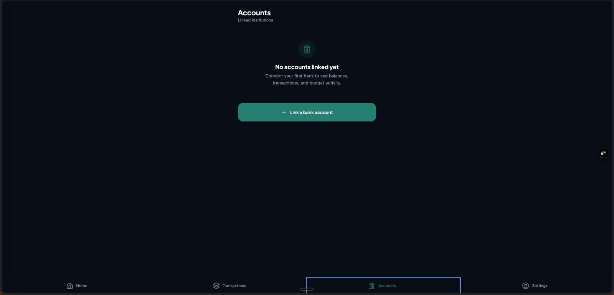
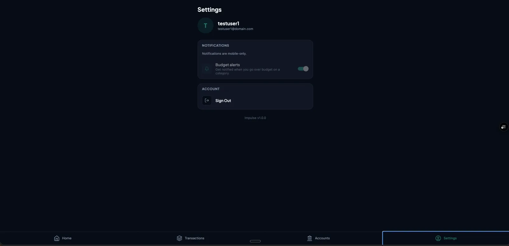

Impulse
A budgeting app that replaced my monthly Google Sheets routine with automatic bank sync, real categories, and zero manual data entry — built to solve the tedious process of budgeting.




01The problem
Every month I sat down with a Google Sheet, my bank's transaction export, and about an hour I didn't want to spend copy-pasting and re-categorizing purchases by hand. The spreadsheet worked, but it only worked if I kept feeding it, which was super tedious. I wanted something that pulled transactions automatically, kept a running budget by category, and required close to zero manual upkeep, while still feeling like my system rather than a generic budgeting app with features I'd never use.
02Validating it beyond myself
Before writing any code, I'd already been posting personal-finance breakdowns as sahil.bholaa, my content account.
I treated that audience as an ongoing, lightweight research channel — and I even conducted user interviews with some people to see what they would want in a budgeting app — and used it to decide what shipped first. Automatic bank sync went in before custom categories, recurring-bill detection, or any of the more interesting engineering problems, because the user signal made it clear that manual entry was the actual point of failure, not the feature set sitting on top of it.
03Why Plaid
The core requirement was reliable, ongoing access to transaction data across whatever banks I (and eventually other users) actually use — not a one-time CSV import. Three things made Plaid the right call over building a bank-scraping solution or using a lighter-weight aggregator:
- Coverage and reliability. Plaid supports the major US institutions I needed on day one without me maintaining per-bank integrations.
- Webhook-driven sync. Rather than polling, Plaid pushes transaction updates, which fit a mobile app where I wanted fresh data without draining battery or hammering an API on a schedule.
- Compliance posture. Plaid never hands raw bank credentials to my app — it handles the OAuth/credential exchange and returns a scoped access token, which meant I wasn't storing or touching anything sensitive from the bank login itself.
04Key technical decisions
Supabase as the backend
Postgres, Auth, and Edge Functions in one place meant I could ship webhook handlers and scheduled sync jobs (pg_cron) without standing up a separate server.
Access tokens never reach the client
Plaid access tokens live only in Supabase Vault, accessed exclusively from Edge Functions. The mobile app never sees them.
Idempotent sync
Transactions are upserted on a unique plaid_txn_id, and the sync cursor only advances after a successful write — so a failed sync can't silently drop data.
Expo + EAS for mobile
React Native via Expo Router let me ship a native iOS experience solo, with EAS Build handling the release pipeline; a lightweight Vercel-hosted site handles the public-facing landing page.
05Security & privacy
Because this touches real financial data, security constraints were treated as non-negotiable rather than nice-to-haves:
- Row Level Security enabled on every table — a user can only ever query their own rows, enforced at the database layer, not just in application code.
- Session tokens stored in Expo SecureStore (hardware-backed keychain), never AsyncStorage.
- Every Plaid webhook signature is verified before its payload is trusted.
- Strict TypeScript throughout, with
anydisallowed by lint rule, to cut down on the class of bugs that comes from silently mistyped financial data.
06Results & what I learned
The biggest lesson wasn't technical — it was showing myself that I could build something of value for myself and hopefully others in the future.
Impulse is still in active development and not yet public — this case study exists so the work is visible without exposing a production app handling real account data.